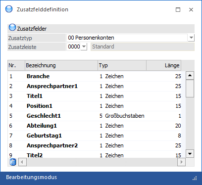
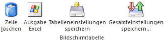
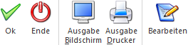

Im Menüpunkt…
1 WinLine START
1 Optionen
1 Zusatzfelder
… können für die verschiedensten Stammdatenbereiche "Zusatzfelder" definiert werden, wobei es pro Datenbereich möglich ist, verschiedene Zusatzleisten zu generieren. Dabei ist die Anzahl von individuellen Zusatzfeldern pro Stammdatenbereich/Leiste auf 30 Felder limitiert. Diese Felder können pro Datenstammsatz ausgefüllt werden, wobei immer ein eigenes Register "Zusatz" zur Verfügung steht.
Hinweis
Sollte sich ein Benutzer in einem Menüpunkt der WinLine FIBU bzw. der WinLine FAKT oder in der Vorlagenanlage bzw. dem Fenster "Kampagnen" befinden, so wird die Zusatzfelddefinition in einem "Lesemodus" geöffnet, d.h. es können die bestehenden Zusatzfelder kontrolliert, Änderungen allerdings nicht durchgeführt werden. Hierfür muss zunächst mit Hilfe des Buttons "Bearbeiten" der "Bearbeitungsmodus" aktiviert werden, wobei die oben erwähnten Bereiche zuvor verlassen werden müssen. Über den aktuellen Modus wird jederzeit in der Statusleiste Auskunft gegeben.
ü
ü
Achtung
Der Menüpunkt "Zusatzfelder" kann nur von Benutzern geöffnet werden, die Voll,- oder Datenadministratoren-Rechte besitzen. D.h. von Benutzern, bei denen in der Benutzeranlage die Option "Administrator" oder "Datenadministrator" aktiviert ist.

Folgende Datenbereiche können mit Zusatzfeldern versehen werden:
ü 00 - Personenkonten
ü 01 - Artikel
ü 02 - Sachkonten
ü 03- -Kostenstellen
ü 04 - Kostenarten
ü 05 - Kostenträger
ü 06 - Anlagen
ü 07 - Arbeitnehmer
ü 08 - Mandantenstamm
ü 09 - Kontakte
ü 10 - CRM
ü 11 - Projekte
ü 12 - Vertreter
Ø Zusatzleisten
Aus der Auswahlliste kann eine Zusatzleiste gewählt werden. Durch die Option "NEUEINGABE" können neue Zusatzleisten angelegt werden. Im nachstehenden Feld kann die Bezeichnung der Zusatzleiste eingetragen werden.
Beispiel
Pro Kundengruppe sollen unterschiedliche Zusatzfelder verwaltet werden. Dazu wird für jede Kundengruppe eine eigene Zusatzleiste angelegt, die die variablen Feldbezeichnungen enthält. Im Personenkontenstamm kann dann gewählt werden, welche Zusatzleiste und somit welche Felder sollen zur Verfügung stehen.
Achtung
Vom Standard abweichende Zusatzleisten (d.h. Leisten ungleich "0000") stehen in individuellen Formularen oder dem WinLine EXIM nicht zur Verfügung.
Eingabefelder
Ø Nr.
An dieser Stelle wird die Nummer des Zusatzfeldes angezeigt. Die Felder selbst werden automatisch fortlaufend nummeriert (von 1 bis 30).
Ø Bezeichnung
max. 50stellig alphanumerisch
Ø Typ
Mittels Auswahlliste kann der Typ des Zusatzfeldes definiert werden.
ü 1 - Zeichen
Es können Texte
hinterlegt werden.
ü 2 - Interger
Es handelt sich um
ganze Zahlen (max. 5stellig)
ü 4 - Double
Der Typ "Double"
definiert, dass es sich um eine Fließkommazahlen mit 13 Zahlen + einem
Kommazeichen handelt. Die Anzahl der Nachkommastellen wird über die Eingabe in
der Spalte "Länge" gesteuert.
ü 5 - Großbuchstaben
Erfasste
Texte werden in Großbuchstaben konvertiert.
ü 6 - Datum
Die Eingabe wird
automatisch als Datum interpretiert.
Ø Länge
Die Länge ist abhängig von dem ausgewählten Typ:
ü 1 - Zeichen
Die Länge kann in
dem Bereich von 1 bis maximal 255 Zeichen liegen.
ü 2 - Interger
Die Länge muss
immer 5 Stellen betragen.
ü 4 - Double
Bei dem Typ "Double"
sind folgende Hinterlegungen möglich:
ü 1 -> 12 Vorkommazahlen und 1 Nachkommazahlen
ü 2 -> 11 Vorkommazahlen und 2 Nachkommazahlen
ü 3 -> 10 Vorkommazahlen und 3 Nachkommazahlen
ü 4 -> 9 Vorkommazahlen und 4 Nachkommazahlen
ü 14 -> 11 Vorkommazahlen und 2 Nachkommazahlen
ü 5 - Großbuchstaben
Die Länge
kann in dem Bereich von 1 bis maximal 255 Zeichen liegen.
ü 6 - Datum
Die Länge muss immer
10 Stellen betragen.
Tabellenbuttons

Ø Zeile löschen
Durch Anklicken des Löschen-Buttons wird das gerade aktive Zusatzfeld gelöscht.
Ø Ausgabe Excel
Durch Anwahl des Buttons "Ausgabe Excel" wird der Inhalt der Tabelle nach Microsoft Excel übergeben.
Ø Tabelleneinstellungen speichern
Die Spalten einer Tabelle können grundsätzlich an beliebige Positionen verschoben, bzw. in der Breite entsprechend angepasst werden. Durch Anwahl des Buttons "Tabelleneinstellungen speichern" werden die Einstellungen benutzerspezifisch gespeichert und bei dem nächsten Aufruf des Programmpunktes wieder vorgeschlagen.
Ø Gesamteinstellungen speichern
Im Gegensatz zu "Tabelleneinstellungen speichern" können mit "Gesamteinstellungen speichern" mehrere Tabellenaufbauten gespeichert und nach Wunsch geladen werden. Zusätzlich werden Sonderfunktionen der Tabelle (z.B. "Spalte gruppieren") ebenfalls bei der Speicherung bedacht.
Buttons

Ø Ok
Durch Drücken des Buttons "Ok" bzw. der F5-Taste werden die vorgenommenen Einstellungen gespeichert.
Ø Ende
Durch Drücken des Buttons "Ende" bzw. der ESC-Taste wird das Fenster geschlossen.
Ø Ausgabe Bildschirm
Durch Anklicken dieses Buttons wird eine Liste aller Zusatzleisten (aller Datenbereiche) auf dem Bildschirm ausgegeben.
Ø Ausgabe Drucker
Durch Anklicken dieses Buttons wird eine Liste aller Zusatzleisten (aller Datenbereiche) am Drucker ausgegeben.
Ø Bearbeiten
Bei Anwahl dieses Buttons wird der "Bearbeitungsmodus" aktiviert, d.h. bestehende Zusatzfelder können geändert und neue Felder angelegt werden.
Hinweis
Standardmäßig wird beim Aufruf des Fensters geprüft, ob die Zusatzfelder bearbeitet werden können. Ist dem der Fall, so wird automatisch der Bearbeitungsmodus aktiviert (Button "Bearbeiten" wird farblich unterlegt). Zusätzlich wird über den aktuellen Modus der Statusleiste Auskunft gegeben wird.